Руководство
Каждая возможность по шагам — те же руководства, что живут в «Справке» приложения, только просторнее. Кнопки названы ровно так, как вы увидите их на экране.
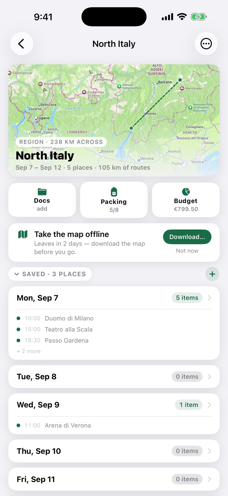
Поездка — это набор дней; каждый день — лента мест, еды, прогулок и билетов. Карта наверху живая: она растёт от города до целого региона вместе с вашим планом.
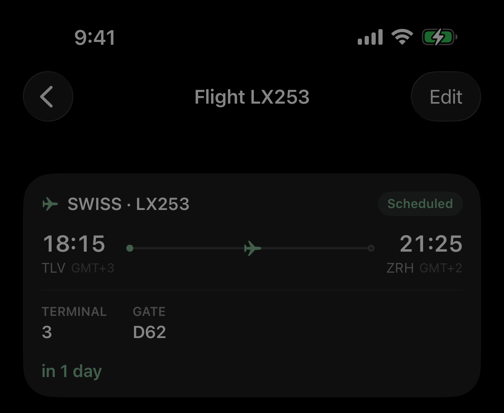
Добавьте в любой день то, как вы добираетесь: самолёт, поезд, машина, автобус, паром, велосипед или пешком. Импортируйте билет — и Camipack прочитает его: авиакомпанию, оба аэропорта, терминал и идёт ли рейс по расписанию, а вводить не придётся ничего. Выберите билеты всей семьи разом, и четыре файла, описывающих одни и те же два перелёта, свернутся в два, появятся путешественники, а копия каждого ляжет в документы.
За пять часов до вылета рейс появится на заблокированном экране и в Dynamic Island с обратным отсчётом — и продолжит считать уже на борту, до посадки, а не до взлёта. Связь для этого не нужна: отсчёт идёт на самом телефоне. Поезда, автобусы и паромы делают то же самое своими словами, ведь у поезда платформа, а у парома причал.
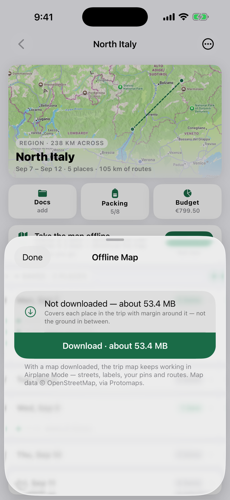
Загрузите карту поездки один раз — и она будет работать вообще без интернета: улицы, названия, ваши метки и пешие маршруты. Карта охватывает всё, что отмечено в поездке, с запасом, и целиком лежит на телефоне. Город занимает примерно 10–40 МБ.
Она также показывает, где вы, и указывает путь. Спутниковое позиционирование работает только на приём, поэтому телефон знает своё положение и в авиарежиме, и за границей с выключенным интернетом — просто в первый раз ищет чуть дольше. На офлайн-карте коснитесь одного из дней вверху: точка отметит вас, а стрелка с расстоянием укажет на вашу следующую остановку в этот день.
Это направление и расстояние, а не пошаговая навигация. Стрелка указывает прямо на место, сквозь всё, что между вами, — поэтому идите по пешей линии, уже нарисованной на карте, а стрелкой проверяйте, что направление верное. Подойдите ближе 25 метров — и она сама перейдёт к следующей остановке.
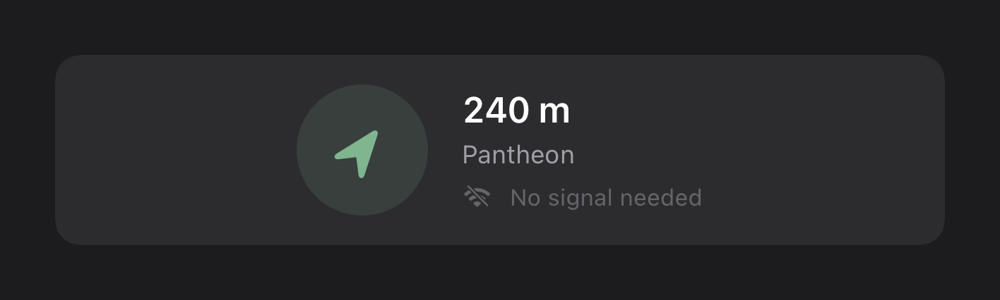
Проверьте до поездки: загрузите, включите авиарежим, откройте карту.
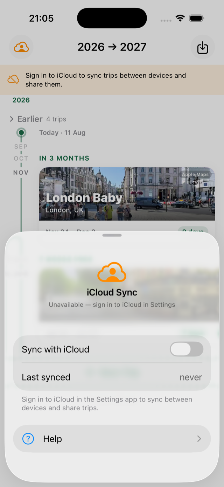
Поделитесь поездкой — и вся семья редактирует один и тот же план: изменения появляются у всех за считаные мгновения, с пометкой, кто что изменил. Синхронизация идёт через ваш собственный iCloud; у Camipack нет серверов.
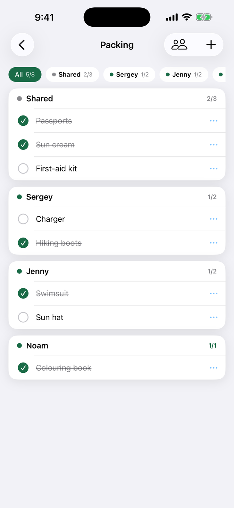
Один общий список для семьи плюс личный для каждого, со своим цветом. Счётчики складываются, поэтому экран поездки всегда отвечает одним взглядом: «всё собрано?»
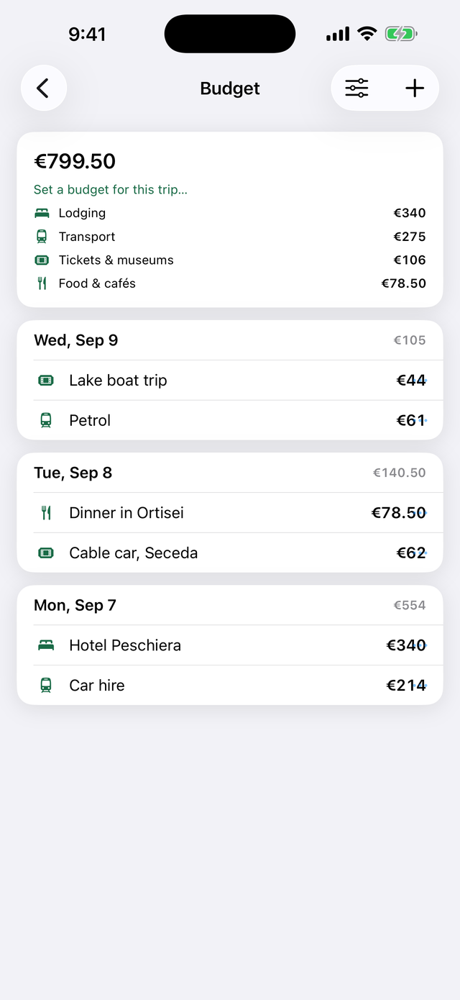
Следите за тратами и когда планируете, и когда едете. У каждого расхода своя валюта — отель в евро, музей в фунтах, — а итоги всё равно сходятся в одном месте.
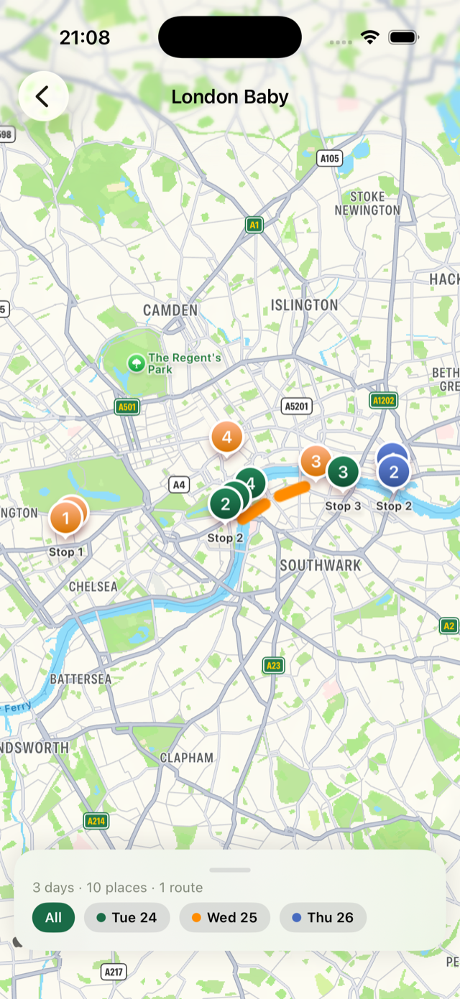
Все пункты с координатами за все дни: метки и линии маршрутов подкрашены по дням, чтобы вторник не сливался со средой. Один тап — и остаётся только один день.
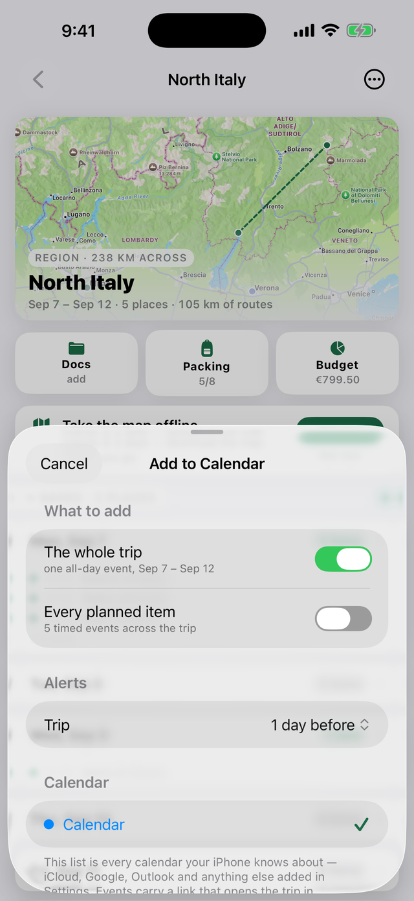
Поместите поездку туда, куда семья и так смотрит: одно событие на весь день через всю поездку и, при желании, каждый пункт со временем — отдельным событием с напоминанием.
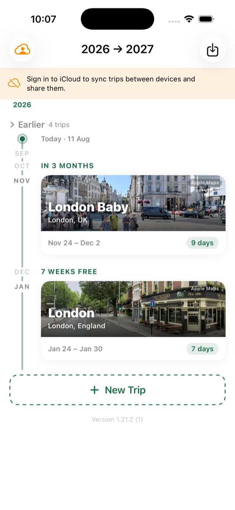
Главная — это лента, а не таблица: ваши поездки по порядку, карточки с фотографиями, обратный отсчёт («ЧЕРЕЗ 3 МЕСЯЦА») и свободные промежутки между поездками — ровно там и начинается следующий план.
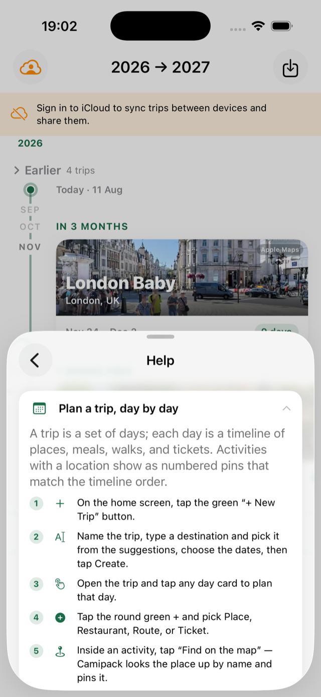
Всё, что есть на этой странице, живёт и внутри приложения — коснитесь облачка на главном экране, затем «Справка». Каждая тема — пронумерованное руководство, показывающее, какую именно кнопку нажать, чтобы никому в семье не приходилось спрашивать, как что работает.
Приложение говорит по-русски, по-английски, по-испански и по-португальски, а iOS позволяет задать язык для одного Camipack, не меняя язык телефона.